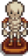
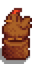
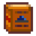

Múzeum

|
Hiányos fordítás Ezt a cikket vagy szakaszt nem fordították le teljesen magyarra. Üdvözlünk az oldal fordításával. |
| Stardew Valley Múzeum és Könyvtár | |
 | |
 | |
| Nyitvatartás: | 8:00am to 6:00pm |
| Zárva: | Town Festival days |
| Cím: | East side of Pelican Town, south of the Blacksmith. |
| Lakók: | |
The Museum can be found in the South-East corner of Pelican Town, south of the Blacksmith.
The museum contains a library and a gallery for displaying the museum's collection. At the start of the game, the entire museum collection is empty. Gunther, the curator, will ask The Player to help by donating Artifacts and Minerals.
Only a single copy of any particular item may be donated. Note that if an item has not yet been donated, its description in inventory or storage says: "Gunther can tell you more about this if you donate it to the museum". Items can be rearranged in the donation interface, or by clicking the small paper on the left side of Gunther's desk at any time. Donated items may be examined by right-clicking on them.
Penny tutors Vincent and Jas in the library on Tuesday, Wednesday, and Friday.
Adományok utáni jutalmak
Gunther offers rewards when the collection has grown to certain points, or for the donation of specific artifacts.
Total Donations
There are 95 items that can be donated to the Museum.
| Items Donated | Reward |
|---|---|
| 5 | |
| 10 | |
| 15 | |
| 20 | |
| 25 | |
| 30 | |
| 35 | |
| 40 | |
| 50 | |
| 60 | |
| 70 | |
| 80 | |
| 90 | |
| 95 (all items) |
Minerals Donated
There are a total of 53 Minerals that can be donated.
| Minerals Donated | Reward |
|---|---|
| 11 | |
| 21 | |
| 31 | |
| 41 | |
| 50 |
Artifacts Donated
There are a total of 42 Artifacts that can be donated.
To receive the 'Burnt Offering' reward, at least 10 artifacts must have already been donated that include the Rare Disc and Dwarf Gadget. The 11th (or later) donation that meets these conditions will earn the 'Burnt Offering.'
| Artifacts Donated | Reward |
|---|---|
| 11 artifacts including: |
|
| 15 artifacts |  Csontváz szobor |
| 20 artifacts | |
| 3 artifacts including: |
|
| 3 artifacts including: |
|
| 5 artifacts including: |
 Chicken Statue |
|  Törpe fordítási útmutató | |
Books
- See: Lost Books
Achievements
There are 2 Achievements associated with donating Artifacts or Minerals to the Museum.
- Treasure Trove (Donate 40 different items to the museum)
- A Complete Collection (Complete the museum collection)
Notes
- There is a total of 102 spaces available for donations to be placed but a total of only 95 available items to be donated. Six spaces in the center of the largest table cannot be reached to examine items placed on them, so it may be advisable to leave this area empty.
- If using a controller, any diagonal item may be unreachable for examination once donated.
- To move items inside the donation interface on Switch, go to "Options" and disable "Use Controller Style Menus".
- In iOS (and possibly other mobile versions) items on the bottom most row cannot be moved in the donation interface. However, if the character goes to the front desk one tile to the left of Gunther, they get the option to rearrange the collection (even without completing the collection). In this mode, all the items are moveable.

Museum Interior with unreachable tiles shaded

One example of an organized complete collection
History
- 1.3.32: Fixed inability to place donated items on the bottom two rows of the museum.
- 1.4: Added donation rewards for 35, 70, 80, and 90 items donated. Added ability to rearrange the museum artifacts without having to donate a new one. Fixed bug where movement of inventory inside donation screen would prevent donation of items. Fixed issue in multiplayer where rearranging the collection would result in the message that a new item was donated. Various other museum-donation related fixes.
- 1.5: Museum donation interactions improved.
| Épületek | ||
|---|---|---|
| Kereskedők | Ácsműhely • A Varázsló tornya • Jégkrémstand • Halbolt • Harvey klinikája • Hullócsillag szalon • JojaMart • Kalandorok céhe • Kaszinó • Kovács • Könyvkereskedő • Marnie tanyája • Oázis • Óriási tönk • Pierre boltja • Qi diós szobája • Romos ház • Sivatagi kereskedő • Szigeti kereskedő • Utazó szekér • Vulkáni törpe | |
| Házak | Elliott faháza • Faház • Folyó út 1 • Folyó út 2 • Fűzfa köz 1 • Fűzfa köz 2 • Hegyi út 24 • Lakókocsi • Leah kunyhója • Parasztház • Polgármester háza • Sátor | |
| Farm épületek | Gazdálkodás | Csűr • Halastó • Háziállat tálka • Istálló • Istálló (ló) • Kunyhó • Kút • Malom • Ragacsketrec • Raktár • Siló • Üvegház |
| Különleges | Arany óra • Farm obeliszk • Föld obeliszk • Junimo kunyhó • Sivatagi obeliszk • Sziget obeliszk • Víz obeliszk | |
| Egyéb | Boszorkány kunyhója • Fürdő • Joja raktárépület • Közösségi központ • Kutya karám • Mozi • Múzeum • Szigeti iroda | |